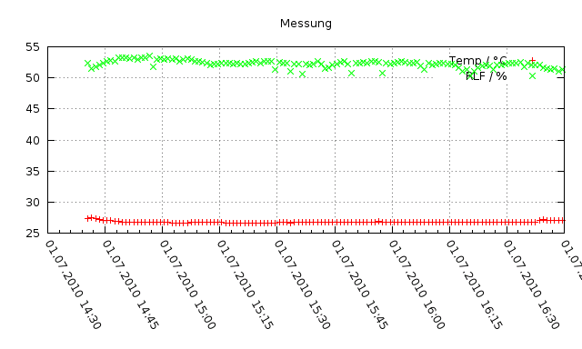

Zur SourceForge.net Projektseite
If you would like to see this page in English, let me know.
Der Voltcraft DL-120TH (vertrieben von Conrad Electronic) ist ein USB-Datenlogger für Temperatur und Luftfeuchtigkeit.
Das Tool vdl120 ermöglicht die Benutzung des Datenloggers unter Linux, Mac OS X, FreeBSD und anderen Betriebssystemen mit libusb. Erfolgreich getestet wurde die Software bis jetzt nur unter Linux.
Das vdl120-Tool bietet die wichtigsten Funktionen der Original-Software:
Zur grafischen Darstellung der Messdaten kann man z.B. Gnuplot verwenden. Ein Beispiel-Skript ist im Abschnitt Verwendung zu finden.
Via SourceForge.net
Die Bedienung erfolgt über die Kommandozeile, ohne grafische Oberfläche:
vdl120 -c LOGNAME NUM_DATA INTERVAL --> configure logger vdl120 -i --> print config vdl120 -p --> print data vdl120 -s --> store data in LOGNAME.dat
Das Tool wird mit dem Parameter -c aufgerufen, gefolgt vom Namen des Loggers, der Anzahl der Messpunkte und dem Messintervall in Sekunden:
vdl120 -c "Logging Name" 16000 60
Der Name darf aus maximal 16 Zeichen bestehen.
Für die Anzahl der Messpunkte sind in der Original-Software folgende Werte vorgesehen: 50, 100, 500, 1000, 2000, 4000, 6000, 8000, 10000, 12000, 14000, 16000.
Für das Messintervall sind folgende Werte vorgesehen: 2s, 5s, 10s, 30s, 1m, 5m, 10m, 30m, 1h, 2h, 3h, 6h, 12h, 24h.
Ausgegeben wird die aktuelle Konfiguration des Loggers, siehe Auslesen der Konfiguration.
Das Tool wird mit dem Parameter -i aufgerufen:
vdl120 -i
Die Ausgabe sieht etwa so aus:
config->name = Logging Name config->num_data_conf = 16000 config->num_data_rec = 126 config->interval = 60 config->time_year = 2010 config->time_mon = 7 config->time_mday = 1 config->time_hour = 14 config->time_min = 40 config->time_sec = 30 config->temp_is_fahrenheit = 0 config->led_conf = 0x0a (freq=10, alarm=0) config->start = 0x02 (automatic) config->thresh_temp_low = 0 config->thresh_temp_high = 40 config->thresh_rh_low = 35 config->thresh_rh_high = 75
Achtung: Beim Auslesen der Konfiguration wird die aktuelle Messung abgebrochen!
Das Tool wird mit dem Parameter -p aufgerufen:
vdl120 -p
Die Ausgabe sieht etwa so aus:
1277995230 27.4 52.4 1277995290 27.5 51.5 1277995350 27.3 51.8 1277995410 27.2 52.1 1277995470 27.1 52.4 [...]
Pro Zeile wird ein Messpunkt ausgegeben, bestehend aus Zeitstempel (UNIX Zeit, GMT), Temperatur (in °C) und Luftfeuchtigkeit (in %).
Das Tool wird mit dem Parameter -s aufgerufen:
vdl120 -s
Die Messdaten werden automatisch in die Datei LOGNAME.dat (also z.B. "Logging Name.dat") gespeichert. Falls die Datei bereits existiert, werden die neuen Messdaten angehängt. Das Format ist dasselbe wie beim Auslesen der Messdaten. Zusätzlich wird vor den Messdaten eine Kommentar-Zeile mit Startzeit, Anzahl der Messpunkte und Messintervall gespeichert:
# [2010-07-01 14:40:30] 126 points @ 60 sec 1277995230 27.4 52.4 1277995290 27.5 51.5 1277995350 27.3 51.8 [...]
Zur grafischen Darstellung der Messdaten mit Gnuplot kann man das Skript messung.plt verwenden:
#!/usr/bin/gnuplot -persist
# Ausgabe in PNG Datei
#set terminal png nocrop enhanced font "/usr/share/fonts/corefonts/verdana.ttf" 10 size 800,600
#set output 'messung.png'
set title "Messung"
set xdata time
set timefmt "%s"
set format x "%d.%m.%Y %H:%M"
set xtics nomirror rotate by -60
set grid
plot "messung.dat" using 1:2 with points lt 1 title "Temp / °C", \
"messung.dat" using 1:3 with points lt 2 title "RLF / %"
# Darstellung des 24h-Verlaufs
#set format x "%H:%M"
#plot "messung.dat" using (int($1) % 86400):2 with dots lt 1 title "Temp / °C", \
# "messung.dat" using (int($1) % 86400):3 with dots lt 2 title "RLF / %"
Das Skript als messung.plt speichern, mit chmod +x messung.plt ausführbar machen und mit ./messung.plt aufrufen. Das Ergebnis:
